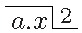
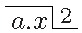

Vir Amplissime atque Celeberrime Fautor Honoratissime
Si de benevolentia mea, ut dicis fuisti semper certissimus, gaudeo speroque Te etiamnum id esse et fore. Non puto me dixisse, quod commendaveris fucos, absit hoc. Omnia quae mihi ab Amico dicuntur in meliorem sensum interpretari soleo. Nimia scrupulositas amicitiae cursum sufflaminat.
Gratum est quod tandem agnoscis non tam facile〈Darüber von Leibniz' Hand:〉 ed tamen a me factum esse synchronae quadratorie determinatae tangentem ducere: dolebam sane, cum viderem a Te verbis meis parvam adeo fidem haberi ut nolueris tantisper cedere in iis quae tumultuarie tantum considerasti, ego vero improbo meditandi labore penitus enucleavi et plus satis examinavi.〈Dahinter von Leibniz' Hand:〉 ed P.*S. ostendit quantum adhuc abfuerit a perfecta enucleatione, et rem a me melius absolutam
Methodum puncta synchronae una quadratura continua inveniendi, cujus adumbrationem in fine literarum adjecisti, velim ut accuratius perficias, videtur pulchri quid habere: interim respective aequales ${1\over 2}\sqrt{NL}$ videtur ... interimerg. K1 nondum recte video, quo tendat, aut quid faciat ad determinationem tangentis synchronae, neque satis capio mentem Tuam quid sc. intelligas per vim gravitatis fortiorem factam, et per haec verba sic omnia in curva AC hac nova gravitate fient proportionaliter ad ea quae in curva A(C) priore gravitate; mihi quidem videtur, prout ego rem concipio, jam per se non mutata gravitate, omnia esse proportionalia〈Darüber von Leibniz' Hand:〉 ineae sed non motus seu tempus in utraque curva, siquidem similes supponantur.
Ecce jam meam solutionem eterg. K1 constructionem pro brevissimo appulsu pro ... appulsuerg. K1, quia illam gratam fore dicis, videbis ipse optime an aliquid cum idea Tua cognati habeat; peragitur quidem sine synchronae consideratione, interim et hujus tangentes facillime per illam ducuntur〈Darüber von Leibniz' Hand:〉 ratam fore praevideri poterat, etsi non dixissem. Problema ita se habet Datis ordinatim positione curvis similibus ex eodem puncto $A$ similiter descriptis $AIF$, $AHD$, $AGB$ etc. (NB. non necesse est ut habeant commune initium) et data positione recta $CD$. Quaeritur ex omnibus istis curvis illa, per quam grave a puncto $A$ descendens tempore brevissimo appellat ad rectam $CD$. Sol. Assumatur ex curvis similibus una quaedam constans, ut $AGB$; sintque duae variabiles $AIF$, $AHD$ situm proximum habentes: Jam si $AH D$ vel $AIFE$ illa sit per quam grave celerrime descendit ad datam $CE$, oportet ut $tAIFE$ sit $= tAHD$ (per $tAIFE$, $tAHD$ intelligo tempus per $AIFE$, et per $AHD$,) utrumque enim tempus minimum et hinc inde crescere supponitur. Ductis per $D$ et $E$ rectis $ADB$, $AEN$ secantibus curvas in $F$, $B$ et $N$; intelligatur ducta $NP$ parallela ipsi $C D$, quae secet $AB$ productam in $P$, ita fient triangula similia $FED$ et $BNP$, in quorum in quorum ... videbiserg. K1 laterum $FE$, $FD$ vel $BN$, $BP$ ratione invenienda consistit caput

rei ut videbis. Jam facile demonstratur tempora per arcus similes esse in subduplicata ratione eorum subtensarum, aliarumve linearum homologarum,aliarumve ... homologarumerg. K1 ergo$\,$ $tAHD$ $\,$ seu $\, tAIFE~.~tAIF::\surd AD~.~\surd AF ::$ $\surd AP~.~\surd AB$, est autem iterum, ob similitudinem curvarum $tAIFE~.~tAIF :: tAGBN~.~tAGB$, ideoque $tAGBN~.~tAGB::\surd AP~.~\surd AB$ et dividendo $tBN~.~tAGB:: \surd AP - \surd AB~.~\surd AB::$ (ob $BP$ infinite parvum)(ob ... parvum)erg. K1 $BP~.~2AB$; exprimitur autem $tBN$ per $\frac{BN}{\surd NL}$ adeoque $tAGBN$ per $\displaystyle \int {{BN}\over {\surd NL}}$, unde $\frac{BN}{\surd NL}~.~\displaystyle \int {{BN}\over {\surd NL}} \left( :: BN~.~\surd NL \displaystyle \int {{BN}\over {\surd NL}}\right) :: BP~.~2AB,$ permutando $BN~.~BP::{1\over 2} \surd NL \displaystyle \int {{BN}\over {\surd NL}}~.~AB$. Producto itaque latere $N B$ ad $R$, id est ducta ad curvam $AGB$ tangente $BR$, illaque sumta aequali ${1\over 2} \surd NL \displaystyle \int {{BN}\over {\surd NL}}$, jungatur $AR$, erit triangulum $BAR$ simile parvo triangulo $NBP$ vel $EFD$ et proinde $AR$ parallela positione datae $CD$. Ex inventa hac proprietate seu ratione laterum trianguli characteristici $BP$, $BN$ problemaproprietate | seu ratione trianguli characteristici erg. | problema K1 facillime construitur sic: In omnibus punctis curvae assumtae constantis $AGB$ ducantur tangentes, et fiant singulae aequales huic, respective, quantitati ${1\over 2} \surd NL$fiant[(1)] respective aequales ${1\over 2}\sqrt{NL}$ [(2)] singulae aequales huic respective quantitati ${1\over 2}\sqrt{NL}$ K1 $\int {{BN}\over {\surd NL}}$ (quod utique semper per unam continuam quadraturam peragitur) tunc habebitur nova curva $AOR$; per $A$ ducatur ipsi positione datae $CD$ parallela $AR$ secans curvam $AOR$ in puncto $R$, a quo si ducatur tangens $RB$ ad curvam datam $AGB$, determinabitur punctum $B$ quod quaesito est analogum; ducta enim recta $AB$ et si opus producta, secabit positione datam $CD$ in puncto brevissimi appulsus $D$, per quod si describatur $AHD$ similis ipsi $AGB$, erit haec $AHD$ illa ipsa quae quaeritur. q.*e.*f. Vides quam brevem et simplicem constructionem repererim〈Darunter von Leibniz' Hand:〉 sed tantum pro similibus et similiter positis hujus difficillimi alias problematis; vix puto aliam simpliciorem〈Darüber von Leibniz' Hand:〉 sed generalior potest vel concinniorem adinveniri posse: id hic notabile existimo, quod licet synchronam non consideraverim, hujus tamen tangens eadem opera inventa est, sed constructione omnino inversa, quia quae antea data sunt jam sunt quaesita et vicissim; datur enim punctum $D$ et quaeritur recta $DC$ tangens synchronae transeuntis per $D$, quod sic retrogrado ordine efficio: Duco per $D$ rectam $ADB$ secantem curvam assumtam $AGB$ in puncto $B$, ex quo ducta tangens $BR$ occurret curvae $AOR$ in puncto $R$, quod si jungatur cum $A$ recta $R A$, huic ducenda est parallela $DC$, quae erit tangens synchronae quaesita. Jam spero Te mihi assensurum, quod summo jure dixerim, illum qui licet solverit problema brevissimi appulsus in cycloidibus, non ideo etiam statim id solvisse in aliis curvis similibus, quia in cycloidibus solutio facile habetur sed indirecte ex fundamento optico, nempe ex normalitate undae cum radiis seu synchronae cum brachystochronis; id quod in aliis non obtinet. Quae cum ita sint dicas quaeso annon ipse credas, fratrem meum ad summum solvisse problema in cycloidibus et nec hic plenarie, quia pro recta positione data proponit tantum verticalem, quod me valde obfirmat in suspicione mea, quod scilicet undarum usum huc transferre nesciverit imo de illis ne cogitaverit quidem. Et prout loquitur concludendum est, illum rem pro desperata habuisse in circulis et parabolis, dum ipse suam imbecillitatem fatetur his terminis solvant alii nobis proposuisse sufficiat. Interim in circulis ex constructione mea universali res adeo facilis est, ut quadratura continua reducatur ad rectificationem curvae alicujus algebraicaefehlt K1; scis enim quod si radius sit $a$, et $N L$, $x$; erit ${\frac{BN}{\surd NL}} = {\frac{adx}{\surd aax-x^3}}$, cujus summatio dependet a rectificatione curvae lemniscatae, per quam construximus olim Tuam isochronam paracentricam; Et sic quod notabile est duo haec problemata isochronae paracentricae, et brevissimi appulsus, licetappulsus in circulis, licetK1 utrumque transcendens, inter se tamen habent connexionem algebraicam id est uno constructo, alterum algebraice construitur.
Caeterum artificium meum reducendi diversas quadraturas ad unam continuam agnosco limitatum hic esse et desiderare ut curvae ordinatim positione datae sint similes et similiter positae; in aliis autem occasionibus quam plurimis eo commode utor licet curvae ordinatim positione datae non sint similes, ut in exemplo ellipsium super eodem axe descriptarum cujus in praecedentibus meis mentionem injeci, sed quod miror in responsione non attingis: Imo ope hujus artificii solvo infinita alia hujusmodi problemata, ubi nunquam curvae similes requiruntur, horum aliquot curiosa perscripsi nuper Dno Varignonio,〈Darüber von Leibniz' Hand:〉 uto esse inserta Diario Gallico quae proponat suis Geometris. Unde colligere poteris hoc artificium latius patere nec adeo limitatum esse, quam statim Tibi visum est.
Et ego semper censui perfectissimam transcendentium expressionem esse per exponentiales, sed mihi videtur frustra illam quaeri in iis quae non dependent a quadratura hyperbolae; unde imaginari non possum quomodo etiam exponentialiter exhiberi posse velis quae supponunt quadraturam circuli, optarem unicum exemplum: certissimum puto omnem quantitatem exponentialem quam voco percurrentem per logarithmicam construi posse. Sed forte aliud adhuc genus exponentialium habes, cujus participem me reddas rogo.
Cedo manus: Problema radii non est plus quam determinatum prout intelligis medium variari secundum duas dimensiones: sed si placet attende quod longe difficilius sit determinare leges harum variationum ut radii in datas lineas transeant, quam earundem linearum invenire curvas normaliter secantes, unde〈Darüber von Leibniz' Hand:〉 Imo utiliter unde enim ex inverso jam aliunde habitis normaliter secantibus habetur et 〈modus〉 eterminandi medii densitates. gratis hoc ex illo quaereres. Praeterea observo quod superficies verb. gr. verticalis repraesentans medium varians secundum ambas dimensiones id est secundum rectam verticalem et horizontalem considerari tamen possit tanquam varians secundum unicam tantum dimensionem si vis verticalem.
Si enim varies medium quocunque modo secundum $ABCDEF$; ita etiam quovis alio modo secundum $ALMNOPA$: manifestum jam est, etiamsi omnia puncta in horizontali $FF$ sint diversae densitatis, dari tamen aliquod punctum $G$ in proxima linea $EE$, quod sit ejusdem densitatis cum $F$, et aliud $H$ in proxima $DD$, item $I$ in $CC$, $K$ in $BB$, $P$ in $AA$ etc. omnia aeque densa ac $F$; quocunque enim modo medium per superficiem $AFFA$ variari concipiatur, haec tamen successio punctorum aeque densorum perpetuo locum habet, quod ni fallor clarum est ex ipsissima Tua continuitatis lege. Datur ergo integra linea $FGHIKP$, secundum quam medium aequaliter est densum; jam si eodem modo concipias reliquas lineas $EO$, $DN$, $CM$, $BL$ etc. transire per puncta ejusdem respective densitatis gradus, habebis medium cujus variatio, quae licet duarum sit dimensionum,〈Darüber von Leibniz' Hand:〉 sua natura manet duarum jam unius tantum dimensionis est: hinc concludo a Te non sat bene dictum esse:〈Darüber von Leibniz' Hand:〉 Imo bene, quia sic regulariter: imo hoc ipsum est variari secundum diversas dimensionesSi varies medium uno tantum modo tunc fateor problema fore plus quam determinatum (nec refert $BB$ verbi gratia recta sit an curva)], refert enim maxime recta sit an curva, vidisti enim si curva admittenda esset, omne medium〈Darüber von Leibniz' Hand:〉 secundum certam tantum curvam quocunque modo〈Darüber von Leibniz' Hand:〉 imo aliquando et secundum rectas varietur uno tantum modo variari intelligendum esse. Quod itaque palmarium est in determinatione medii ut radios transmittat per lineas ordinatim positione datas, perspexi rem eo recidere ut determinentur lineae $FGHIKP$, $EO$, $DN$ etc. quod autem ut supra monui longe difficilius est quam inventio curvarum ad datas normalium. Sed haec pro perspicacitate Tua me multo melius penetrabis, velim per otium cogites, offert sese mihi difficultas insuperabilis in eo, quod infinitae lineae curvae sunt determinandae, forsan omnes diversae naturae.〈Dahinter von Leibniz' Hand:〉 Quia id jam aliunde habemus, normales poterimus et haec solvere habemus,habemus,[(1)] poterimus haec problemata subi bricht ab [(2)] normales ... et haec LiK2
Nuspiam quidem diserte dixisti rem aeque esse facilem in appulsu ad rectam et ad curvam; id tamen ex verbis Tuis sequi credebam cum dicis eadem methodus videtur etiam servire, si celerrimus appulsus quaeratur non ad rectam sed ad curvam positione datam. Si duo diversa per eandem methodum solvuntur, illa duo mihi sunt aeque facilia.〈Dahinter von Leibniz' Hand:〉 [Non sequitur][Non seqvitur]LiK2, Klammern von Leibniz
Video verissimum esse legem minimi vel maximi et in particula curvae minima locum habere, sed sane non possum applicationem ad isoperimetra constituere neque etiam ad brachystochronam datae longitudinis. Verum non minus est, rem posse considerari prius
in ellipsi ordinaria et finita $PQR$ (hoc enim jam diu et ego concipiebam) et determinari in ea punctum $M$, ut ex focis ductae $LM$, $MN$ percurrantur citissime ex data altitudine: demus porro haec deinde posse applicari ad infinite parva, ita ut ratio $LM$ ad $MN$ dari possit: Nondum tamen video, nec videbo donec mihi ostenderis 〈Darüber von Leibniz' Hand:〉 vellem prius calculum in ipsis finitis factum videre labori ut parcam quomodo postea iterum regressus detur a cognitione speciei trianguli infinite parvi $LMN$, ad cognitionem ordinarii, curvae sc. quaesitae vel saltem ad aequationem differentio-differentialem: Quomodo quaeso eo pervenire posses, cum in aequatione litera reperiri necesse sit quae determinet longitudinem curvae (alias indifferens esset pro omnibus brachystochronis) illa litera vero vel illud quicquid sit quod determinet longitudinem curvae, nequidem ingrediatur in considerationem quaerendo speciem trianguli $LMN$. Dixi perpetuo inveniri posse speciem trianguli $LMN$, ita ut descensus per $LMN$ sit citissimus; sed fateor me id nondum quaesivisse, quia a me impetrare non possum ut absolvam calculum prolixissimum qui requiritur. Interim ut obstacula omnia removeam ponamus calculum nobis ostendisse in ellipsi ordinaria et finita punctum $M$ ita se habere, ut triangulum $LMN$ habeat unum latus $LM$ duplum alterius $MN$, atque adeo idem etiam obtinere in ellipticula infinite parva: Quo pacto mihi jam quaeres curvam datae longitudinis,〈Darüber von Leibniz' Hand:〉 imo hoc per se sequitur, ut sit datae longitudinis quia et particula talis est ex eo quod ejus particulae minimae $LMN$ faciant ubique triangulum cujus unum latus $LM$ duplum sit alterius $MN$? 〈Darüber von Leibniz' Hand:〉 hoc fieri hoc loco non potest, quia debent $LM$ et $MN$ inassignabiliter differre Si triangulum $LMN$ posuissem isosceles, praevideo quod mihi responsurus esses curvam quaesitam esse circulum, quamvis id nullo calculo invenire posses, ideoque ut superfluam disputationem evitem pono unum latus duplum alterius, vel si mavis triplum, quadruplumve etc. modo non sit isosceles.
P. Malebranchius utique non egit ut decet, quod Te inconsulto libellum suum in lucem protrusit; dissuasissem id ego ipsi si tum temporis cogitassem quod jam cogito, aut saltem si de privato inter vos commerciovgl. den Briefwechsel mit Malebranche in Reihe II. quod Malebranchius apud me ex parte dissimulaverat constitisset magis; Quid in isto libello contra continuitatis legem contineatur, jam non memini; ex quo enim Galliam deserui libellum amplius haud vidi.
Corporum indivulsorum gradus Tuos admittam, mihi tamen videtur partes eundem servare posse situm inter se, absque ut statuatur corpus perfecte rigidum (loquor de corpusculis exiguis ex quibus majora componuntur); sufficit utique motum conspirantem partium alicujus corpusculi tantum esse, ut ab ambientibus disturbari non possit,〈Darüber von Leibniz' Hand:〉 Vix resistet toti universo quo casul 〈Darüber von Leibniz' Hand:〉 imo non habetur primus indivulsi gradus habetur sine perfecta rigiditate seu duritie. Video clarissime perfecte dura non dari posse, eaque proin absolute rejicio, sed vacuola interspersa Democriti et Gassendi eatenus tantum rejicio, quod jam videam iis non opus esse ad explicandos naturae effectus, contra quam olim credebam motum sc. nullum fore si omnia in universo essent plena, vulgari opinione nixus duritiem dependere ab immediato contactu et pressione materiae ambientis: Quod autem actu ista vacuola non dentur, credo non tam facile demonstrari posse ab illis praesertim qui corporis essentiam non in nuda extensione statuunt. Et sane multis ex locis haud obscure colligo etiam Hugenium vacui fautorem fuisse. Caeterum Democriticorum et Gassendistarum atomos perfecte duras statuentium, illisque vacuum interjicientium opinio non tam absona mihi videtur, quam Hartsoekeri duo extrema inter se conjungentis nempe perfecte durum et perfecte fluidum, quo absurdius nihil excogitari potuit; nihil enim magis continuitatis legi adversatur quam saltus ille ab uno extremo ad alterum. Parum soliditatis Hartsoekerus ostendit in scriptis suis multoque minus alter ille Professor Matheseos Parisinus La Montre, miror qui potueris interpositione Tua dignari hos duos inter se inepte admodum disputantes; me sane non moveret duorum coecorum de coloribus altercatio, neque ei me miscerem. Quid obsecro boni ab homine expectandum, qui in notiones communes misere adeo peccat ceu factum fuit ab isto La Montre, qui 47am prop. Euclid. demonstrare volens immediate per axiomata, crassum adeo et palpabilem commisit paralogismum, ut mathematicorum nemo eum refutare dignaretur sed oportebat, proh pudor! ut quaedam de sequiori sexu illum castigaret, id quod revera fecit Dn. Marchionis Hospitalii Uxor, ut forte vidisti in Diario Parisiensi. Hiccine Professor est, qui alios mathesin docere debet? pudeat hominem ignorantiam suam ita turpiter prodidisse. Quid id ad nos? dices; ignosce, verum est, ejus errores nobis parum imponent; interim quia incidenter de isto homine cogito, non possum non stomachari quod tam male consultum sit illis qui scientiam ab eo haurire volunt. Vale.
 vel

etc.) sit itaque ; jam si differentietur $_1C_2C$ secundum $a$,
manente $x$, habebitur $_1C_2C - {}_1F_2F$ seu ,
〈Darüber von Leibniz'
Hand: gestrichen:〉
hoc si iterum
summetur sed secundum $x$ manente $a$, erit $VC - VF = da$ (quia
datur per $a$ et $x$)
$da$; quoniam vero supra inventum
est $\overset{1}{\alpha}da = VC - V(C) = VC - VF - {_1F}(C) =$
$da - F(C)$, habebitur $F(C) =$
$da - \overset{1}{\alpha} da$. Tandem quia $BC$ datur per $x$ et $a$, si secundum $a$ differentietur
manente $x$, proveniet $F C$ data per $da$, esto ergo $FC =$
$da$. Unde si ducatur $B\theta$
parallela ipsi $F(C)$ id est tangenti curvae datae $VF$, et si fiat
,〈Darüber von Leibniz' Hand:〉 malo : pro ratione cur = pro ::
tanget ducta $C\theta $ curvam $C(C)((C))$ in puncto $C$. Si nunc regula generalis inventa ad
certum exemplum esset applicanda dispiciendum tantum esset quid sit
primum enim et ultimum semper dabuntur per $a$ et $x$ promiscue, medium
vero per $a$ tantum; dari per $a$ et $x$, vel per $a$, comprehendo etiam
quando transcendenter vel ut Tu vocas quadratorie dantur: hoc enim
processum regulae generalis non impedit.
vel

etc.) sit itaque ; jam si differentietur $_1C_2C$ secundum $a$,
manente $x$, habebitur $_1C_2C - {}_1F_2F$ seu ,
〈Darüber von Leibniz'
Hand: gestrichen:〉
hoc si iterum
summetur sed secundum $x$ manente $a$, erit $VC - VF = da$ (quia
datur per $a$ et $x$)
$da$; quoniam vero supra inventum
est $\overset{1}{\alpha}da = VC - V(C) = VC - VF - {_1F}(C) =$
$da - F(C)$, habebitur $F(C) =$
$da - \overset{1}{\alpha} da$. Tandem quia $BC$ datur per $x$ et $a$, si secundum $a$ differentietur
manente $x$, proveniet $F C$ data per $da$, esto ergo $FC =$
$da$. Unde si ducatur $B\theta$
parallela ipsi $F(C)$ id est tangenti curvae datae $VF$, et si fiat
,〈Darüber von Leibniz' Hand:〉 malo : pro ratione cur = pro ::
tanget ducta $C\theta $ curvam $C(C)((C))$ in puncto $C$. Si nunc regula generalis inventa ad
certum exemplum esset applicanda dispiciendum tantum esset quid sit
primum enim et ultimum semper dabuntur per $a$ et $x$ promiscue, medium
vero per $a$ tantum; dari per $a$ et $x$, vel per $a$, comprehendo etiam
quando transcendenter vel ut Tu vocas quadratorie dantur: hoc enim
processum regulae generalis non impedit.
Quod si hanc methodum ad problema brevissimi appulsus applicare velimus, reperiemus quidem facile tangentes synchronarum licet ordinatim positione datae curvae non sint similes ut in superior[e] mea solutione supposui; sed fateberis rem nondum confectam esse, etenim per hanc methodum quaeritur tantum positio tangentis ex dato puncto contactus in data synchrona, interim in celerrimo appulsu res secus se habet quia ex data positione tangente quaeritur punctum contactus. Superest itaque quo exerceas ingenium, ut tam nobile inventum omnibus numeris completum reddas, mihi videtur id praestari posse per intersectionem duarum aliarum curvarum, quae semper construi possunt.〈Darüber von Leibniz' Hand:〉 nihil aliud quaeritur quam ex lineis ordinatim positione datis illam definire quae datam aliam sive rectam sive curvam tangat. Imo et res adhuc facilior inveniatur, linea punctorumerg. LiK2 in quibus quaevis synchrona respective aeq[ualis] tangat rectam positione datae parallelam.
Sed hisce nunc missis pervenio ad aliud egregium inventum pariter generalissimum in quod harum occasione incidi, et quod defectum tollit maximum methodi tangentium inversae, sicuti Tuo sublatus est aliquis methodi tangentium directae. Consistit illud in solutione hujus problematis:〈Darüber von Leibniz' Hand:〉 res longe generalius habetur ex meis Construere curvam datas ordinatim positione curvas sive similes sive non similes in dato angulo sive invariabili sive data lege variabili secantem. Supposita similitudine curvarum ordinatim positione datarum, problema jam dudum solutum habui ut et in paucis aliis dissimilibus; nunchabui | ut et in paucis aliis 〈—〉 erg. | . Nunc K1 vero quomodo in similibus et dissimilibus generaliter idquomodo in dissimilibus | et generaliter erg. | id K1 solverim paucis explicare haud ingratum Tibi fore confido. Sint curvae ordinatim positione datae $AF$, $AE$, $AC$ etc. secandae a curva quaesita $FEC$ in angulo dato quem hic exempli loco ponamus ubique rectum (ut videas, quam facile solutu sit, quod operose ex dioptricis deducere volebas.〈Darüber von Leibniz' Hand:〉 volebam, cum nondum novum hoc artificium reperissemut videas ... volebaserg. K1 Ad $AH$ axem communem intelligatur applicari $HG$ parameter curvae $AE$, cujus intersectio cum $GH$ producta determinet punctum $E$ in curva quaesita: Si hac ratione ubique parametri applicari intelligantur, fiet curva $AG$ quam si determinaverimus eadem opera etiam $FEC$ erit determinata. Esto itaque $AH$, $x$; $HG$ parameter variabilis $a$; $HE$, vel $HB$ (data per $x$ et $a$) quae si differentietur secundum $a$, manente $x$, habebitur $BE$; sit itaque $BE =$ $da$; differentiando vero $BH$ seu secundum $x$ manente $a$, proveniet $CI$ seu $BD$. Sit itaque $dx,$ et proinde $DE =$ $da-$$dx$, est autem $DC = dx$; ergo, quia ex conditione problematis angulus $BCE$ est rectus, erit $\Box DC =$▭ $BDE$, id est $dx^2 =$ $dadx - $ $dx^2$ seu $dx + $$^2$ $dx = $ $da$: Haec igitur aequatio differentialis determinat curvam $AG$, qua constructa construitur etiam quaesita $FEC$;〈Darüber von Leibniz' Hand:〉 ita scilicet problema de curva dati anguli ad curvas ordinatim positione datas reducitur ad tangentium inversam nam data $GH$ parametro, dabitur etiam curva $AE$ cujus illa est parameter; atque adeo producta $GH$, occurret curvae $AE$ in puncto $E$ quod erit ad curvam quaesitam $FEC$. Hujusmodi constructio per parametrorum variabilium applicationem non inelegans mihi videtur, non dubito quin alibi quoque possit inservire, Tuo praesertim accedente ingenio. Notarenotare ... Iterum valeerg. K1, Schluss von K1 hic convenit, quod si curvae ordinatim positione datae sint algebraicae, erit curva parametrorum $AG$ transcendens primi generis; si illae sint transcendentes primi generis erit haec transcendens secundi, et ita consequenter. Patitur quidem hoc exceptionem in nonnullis exemplis particularibus, quando scilicet quantitas evadit algebraica, id quod per accidens fieri potest, etiamsi $AF$, $AE$, $AC$ sint transcendentes. Iterum vale.〈Darunter von Leibniz' Hand:〉 Longe universaliora haberi possunt. Etiamsi angulus non sit datus variabili vel invariabili lege, id est licet puncto dato non detur tangentium curvae $AE$ et curvae $CE$ angulus, sed proprietas simul oscula involvens, seu relatio inter oscula tangentes et ordinatas, res tamen hoc modo habebitur, eo gradu quo oportet
Groningae d. 14 Augusti 1697.
Ut impleam vacuum hujus paginae transcribam huc quaedam ex literis Dn. Varignonii quas eodem die cum Tuis accepi, ut videas quam misere luat noster calculus apud invidos et ignaros; vix putem Lutheri et Calvini reformationem durius habitam fuisse. Mr le Marquis de l'Hospital, inquit, est encore à la campagne, desorte que je me trouve seul icy chargé de la défense des infiniment petits, dont je suis le vray martyr tant j'ay désja soutenu d'assaux pour eux contre certains mathematiciens du vieux style, qui chagrins de voir que par ce calcul les jeunes gens les attrapent et meme les passent, font tout ce qu'ils peuvent pour le décrier, sans qu'on puisse obtenir d'eux d'écrire contre. Il est pourtant vray que depuis la solution que M. le Marquis de l'Hospital a donnée de vôtre probléme de Linea celerrimi descensus, ils ne parlent plus tant ni si haut qu'auparavant. Quos hic vocat mathematicos styli veteris, haud dubie collimat in Catelanum, de la Hire, Roolium aliosque obscuri nominis qui nominari non merentur〈Darunter von Leibniz' Hand:〉 utile scribi Dno Varignonio de vera aestimatione potentiae Jam diu est quod nihil Actorum viderim; fac quaeso ut sciam, an ibi in tempore monitum sit me solvisse problemata fraterna.〈Darüber von Leibniz' Hand:〉 scripsi ut fieret, misique schedulam scriptam Dn. fratri; jam tum Ecce ultimus labitur mensis praestituti temporis intra quod mihi conceditur me soluturum declarare.
Prima occasione per studiosum aut alium hac transeuntem mittam Dno Meyero Tuas ad Cartesium animadversiones. Praecipua quae ibi notavi Tibi jam perscripsi.